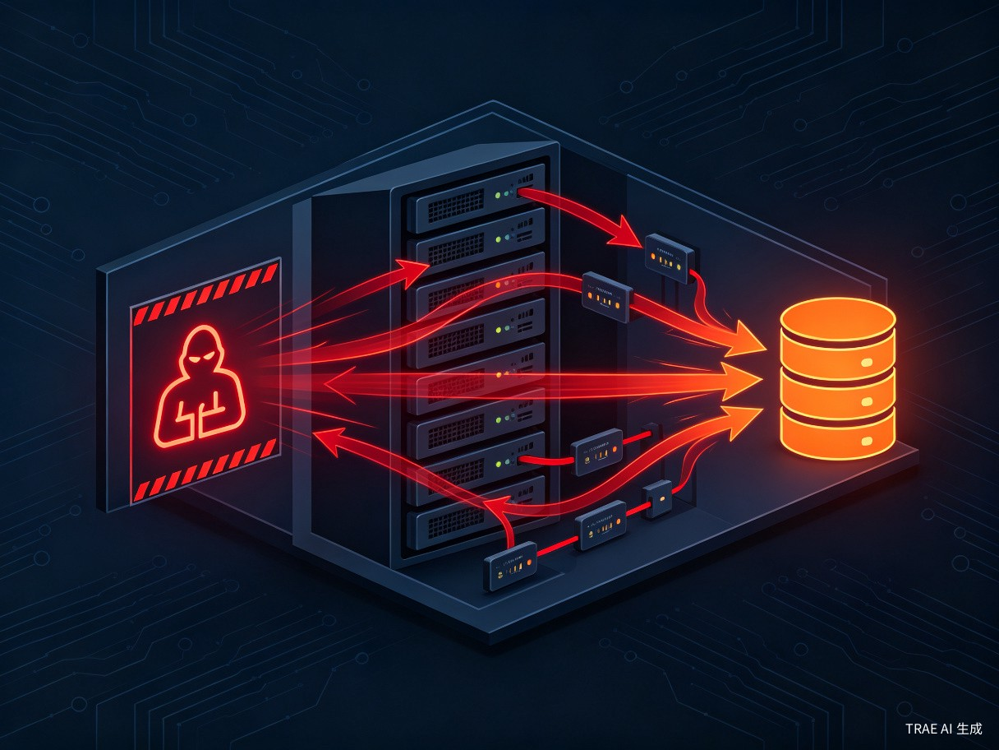
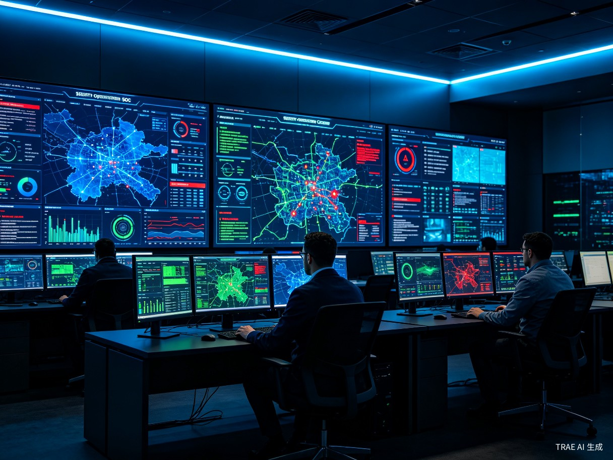

三大核心问题
当前企业网络安全管理面临着三大根本性挑战，它们共同构成了"看不见、追不到、防不住"的安全困境。
拓扑黑盒
企业网络包含云上、云下、分支机构和物联网设备，逻辑关系极其复杂。管理者依赖工程师脑中的记忆来理解网络结构，缺乏一张全局可视的网络作战地图。
攻击路径不可视
传统日志只能显示"谁打了谁"，无法呈现攻击如何在东西向（内部）蔓延。管理员无法看到攻击者从互联网入口到核心数据库的完整漂移轨迹。
风险传导预判难
当一个节点被攻破，管理员难以评估后续影响范围。缺乏影响面高亮扩散算法，无法可视化呈现"单点突破可能引发的连锁崩塌风险"。
核心功能解决方案
针对三大核心问题，宙斯之眼提供了一套完整的可视化解决方案，将抽象的网络数据转化为直观的视觉情报。
3D 网络拓扑地图
平台通过3D网络拓扑图，将物理分散的资产抽象为可视节点，并实时标注节点状态——正常（绿色）、高危（橙色）、已失陷（红色）。管理者首次拥有了一张完整的"网络作战地图"，不再依赖工程师脑中的记忆。
- 支持云上、云下、分支机构和IoT设备的统一拓扑建模
- 实时资产发现与自动拓扑更新
- 节点状态可视化标注与告警联动
- 多层级钻取：从全局视图到单节点详情
攻击路径动态可视化
基于真实拓扑，平台用动态流动线（箭头/光晕）模拟攻击数据包，清晰还原攻击者从互联网入口突破边界，到内网横向移动，最终触及核心数据库的完整漂移轨迹。
- 南北向（边界）+ 东西向（内部）攻击路径全链路追踪
- 动态流动动画还原攻击过程
- 攻击手法自动标注（漏洞利用、暴力破解、横向移动等）
- 时间轴回放，支持攻击事件复盘分析

风险传导扩散预判
在拓扑上引入影响面高亮扩散算法，一旦节点变红，系统自动高亮与其有业务关联的所有邻接节点，可视化呈现"单点突破可能引发的连锁崩塌风险"，为阻断决策提供直观依据。
- 基于业务关联关系的风险扩散模型
- 多级风险传导可视化（直接关联 → 间接关联）
- 自动生成阻断建议与优先级排序
- What-if 场景模拟：预演不同攻击的影响范围
灵感来源
灵感来源于现代战争中的"战场态势感知"系统。
指挥官不是去读每一份侦察兵的报告，而是通过一张实时更新的电子沙盘来洞察全局。我们认为，网络安全防御同样需要一张"网络作战地图"。
将枯燥的数据转化为直观的视觉情报，让防御者能像玩战略游戏一样轻松发现"敌军"动向。宙斯之眼正是这一理念的落地实践——用可视化的力量，让网络安全从"数据驱动"升级为"态势驱动"。
产品定位
目标用户画像
核心用户为大中型企业的首席信息安全官（CISO）、安全运营中心（SOC）的安服团队、网络安全分析师，以及关键基础设施的IT运维负责人。
CISO
首席信息安全官，需要全局视角进行安全决策与合规汇报
SOC 团队
安全运营中心分析师，7x24小时监控与应急响应
安全分析师
网络安全分析师，负责威胁狩猎与深度调查分析
IT运维负责人
关键基础设施单位的IT运维管理与合规保障
使用场景

日常监控
安全运维人员7x24小时在运营中心通过数据大屏或PC端，实时监控全网资产状态、流量异常和威胁告警。
应急响应
当发生大规模入侵或病毒爆发时，高管层利用平台快速定位受影响资产范围，进行指挥决策和复盘汇报。
等保合规汇报
在监管检查或年终汇报时，通过可视化大屏展示整体安全态势报告，直观呈现安全建设成果。
当前痛点
在没有宙斯之眼之前，企业安全团队面临着以下核心痛点。
数据孤岛严重
防火墙、WAF、终端杀毒、云安全组等各自为政，难以关联分析。管理员需要登录五六个后台切换查看，效率极低。
告警疲劳
每天产生数十万条告警，有效信息被淹没。真正的"潜伏威胁"无法第一时间凸显，安全团队疲于奔命却收效甚微。
缺乏全局视角
领导层无法直观地知道"现在公司有多危险"，只能看到一堆看不懂的IP和端口数字，决策缺乏数据支撑。
价值与意义
宙斯之眼不仅是一个技术产品，更是提升企业安全运营效率、捍卫关键信息基础设施安全的重要工具。
效率提升：降低 MTTR
通过将攻击路径可视化（源IP → 攻击目标 → 受害资产 → 攻击手法绘制成一条动态流动线），分析师发现威胁的时间从小时级缩短至分钟级。
过去需要跨部门沟通、查表核对的数据，现在通过一张拓扑图即可一目了然。大幅降低安全人员的脑力消耗和误判率，让有限的安全专家资源投入到真正的"高级威胁狩猎"中。